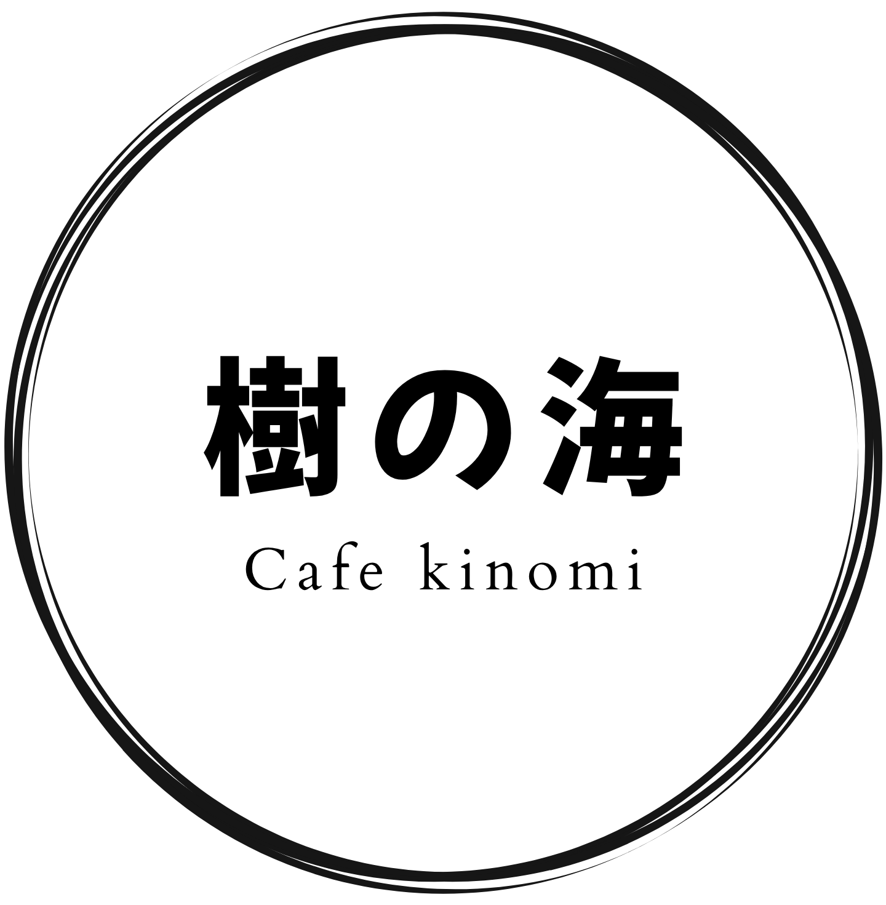

Concept
木の実が育つように、
ゆっくりと。
越前の海と緑に囲まれた、静かな時間。
福井県越前町の海辺にたたずむ「きのみカフェ」は、
地元の恵みを活かしたコーヒーとお食事をご提供します。
波の音に耳を澄ませながら、木の実が静かに熟すように、
ここでしか味わえないゆったりとした時間をお過ごしください。

About
店舗紹介
海と森が交わる、越前のちいさなカフェ。
-
地元素材へのこだわり
越前の海と大地が育てた旬の食材を厳選。地元農家や越前港の漁師たちと連携し、新鮮な恵みをそのままにお届けします。
-
丁寧に淹れる一杯
厳選した豆を一杯ずつハンドドリップで丁寧に抽出。コーヒーの香りと共に、木の実が育つようなゆったりとした時間をどうぞ。
-
海を望む開放的な空間
越前海岸を一望できる大きな窓が自慢の店内。波の音と潮風を感じながら、ここでしか味わえない特別なひとときをお過ごしください。
Access
アクセス
MAP
Echizen-cho, Fukui- 住所
-
〒916-0000
福井県丹生郡越前町〇〇〇 - 営業時間
- 10:00 〜 17:00（L.O. 16:30）
- 定休日
- 火曜日・水曜日
- TEL
- 0778-〇〇-〇〇〇〇
- 駐車場
- あり（〇〇台）
Contact
お問い合わせ
ご予約・お問い合わせは下記フォームよりお気軽にどうぞ。